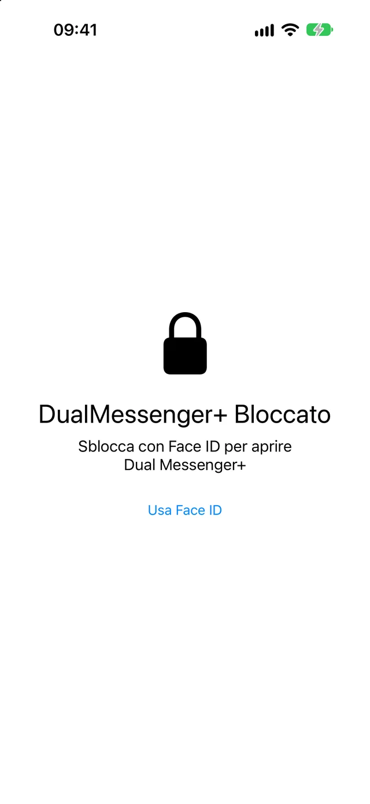
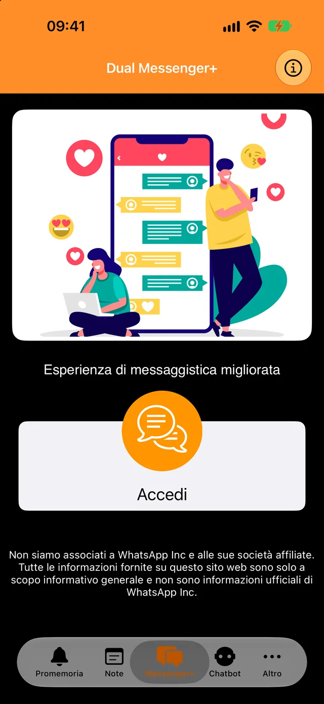
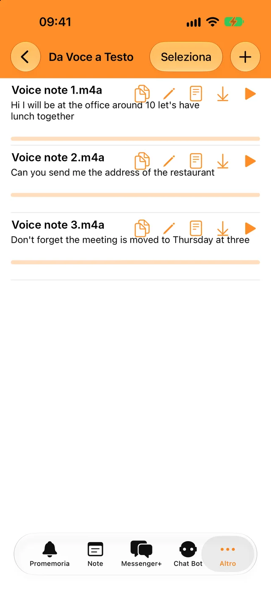
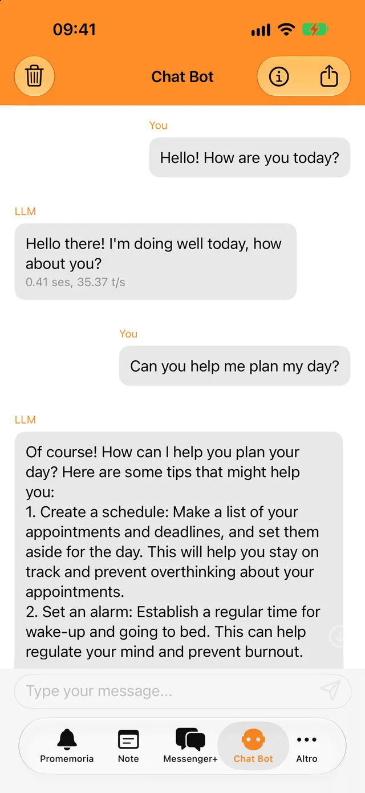
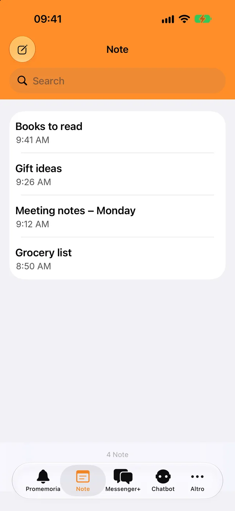

Blocca con Face ID o il tuo codice
Solo tu puoi aprire l’app e le tue chat. Scegli se bloccarla subito o dopo qualche minuto.
Aggiungi il secondo account in pochi secondi e tieni separate le chat di lavoro da quelle personali.
Download gratuito. Per iPhone, iPad e iPhone Duo.

Un blocco per le tue chat e qualche strumento per tutti i giorni, nella stessa app.

Solo tu puoi aprire l’app e le tue chat. Scegli se bloccarla subito o dopo qualche minuto.

Trascrivi messaggi vocali e file audio nella tua lingua e copia il testo dove vuoi.

Fai domande veloci, anche offline. Le tue conversazioni con il bot non lasciano mai il telefono.

Scrivi quello che ti serve, ritrovalo con la ricerca e ricevi una notifica quando scade un promemoria.
Ti serve il telefono su cui hai il secondo account WhatsApp, solo per un momento.
Tocca Accedi. Sullo schermo compare un codice QR.
Vai su Impostazioni, poi su Dispositivi collegati, e tocca Collega un dispositivo.
Inquadra il codice QR con quel telefono. Le tue chat si aprono in Dual Messenger+.
WhatsApp mantiene l’accesso su un dispositivo collegato finché usi WhatsApp sul tuo telefono almeno una volta ogni 14 giorni.
Dual Messenger+ non ha server che vedono i tuoi messaggi. Non c’è nessun account da creare, e l’app non contiene pubblicità né tracker.
Note, promemoria, registrazioni e conversazioni con il bot vengono salvati sul tuo iPhone o iPad.
Non ci dai né un nome, né un indirizzo email, né un numero di telefono.
Face ID e Touch ID sono gestiti dal tuo dispositivo. L’app non riceve mai dati biometrici.
Scarica Dual Messenger+ per iPhone e iPad.
Scarica su App Store